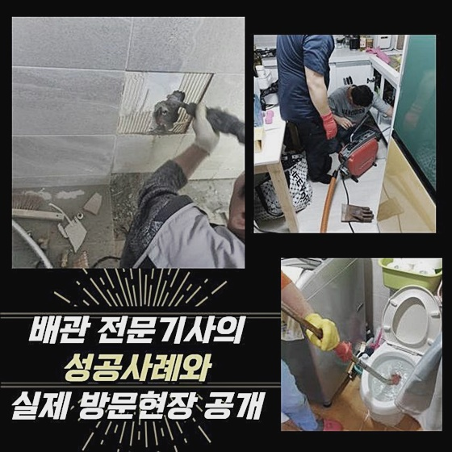
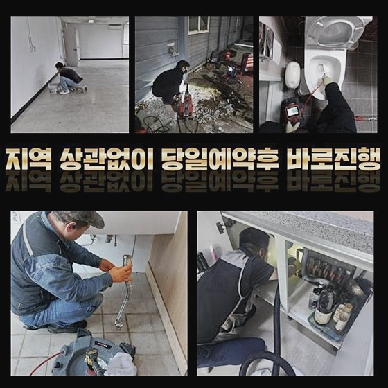
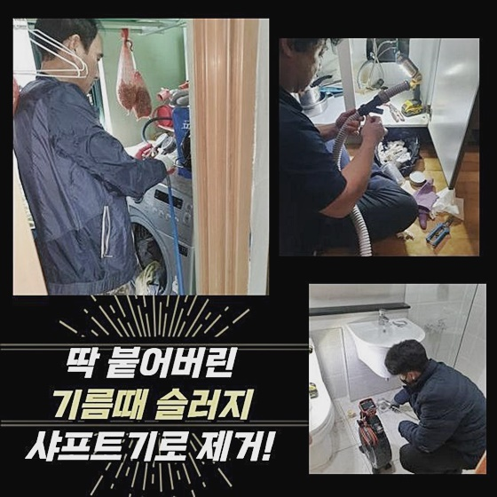
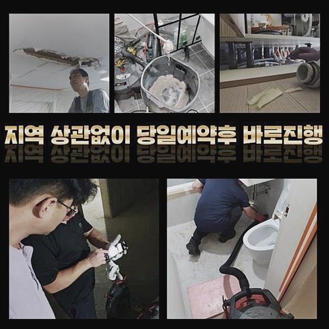
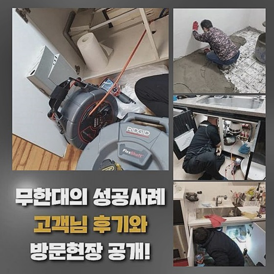
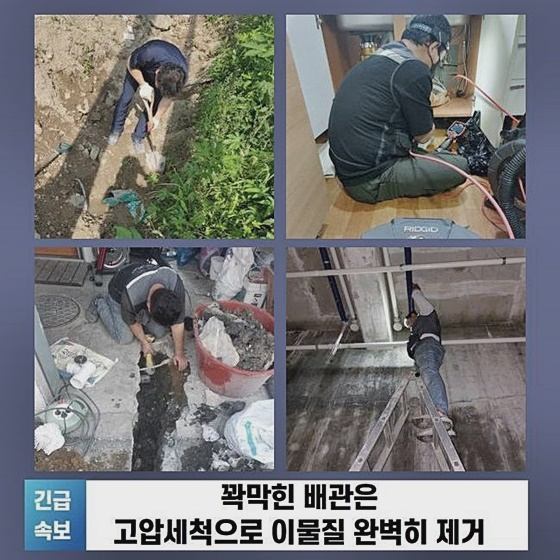

🏠 영등포 당산동세탁실뚫음 대림동 집수정청소 누수공사
서울 영등포구 변기막힘 전문 시공 후기

📋 작업 개요
- 위치: 서울 영등포구, 영등포구, 서울
- 서비스 유형: 변기막힘, 하수구막힘, 배관막힘, 집수정막힘, 누수수리, 역류해결, 뚫는업체, 배관청소, 고압세척, 설비공사
- 작업 일시: 2024. 6. 29. 15:56
- 업체명: 하수구수사대 (010-5615-2118)
🔍 문제 상황
영등포 당산동세탁실뚫음 대림동 집수정청소 누수공사
금일은 하수관이 꽉 막혀 힘들어하셨던 한 고객분의 소식을 들려드리려고해요
오래된 빌라에서 하수관이 막혀서 고여있는 현상에 직면하게 되었던 의뢰인은 눈에 보이는 물건들로 고쳐보려고 했지만 도리어 사태를 나쁘게 만들었다고 합니다
베테랑이 막혀있는 하수구를 확인해보니 안쪽에 있는 하수관이 막히게 되어서 배수가 원활히 되지 않았던 것으로 관찰되었습니다
이번 현상으로 고객분들의 집에는 누수는 없었는데요, 이물질로 꽉찬 하수배관을 빼낼 수는 없는 부분으로 경력자의 작업 스킬이 간절한 순간이었습니다
오후 시간에 전화를 하셔서 신속하게 현장에 방문해서 고객님과 이야기를 실행했습니다
문제 해결을 위해 다양한 소식을 들었는데, 배수 장애가 해결해야 할 과제였습니다
저희들은 구체적인 설명과 원인을 분석하기위해 적극적으로 소식을 주의 깊게 듣습니다 이 점을 근거로하여 곤란을 없애기위해 최선을 다하고 있어요
그결과 우리들은 이와같은 사례를 바탕으로 거듭 발전해 나가고 있어요
더욱이 하수관의 해결책을 찾는데는 장비의 성능이 굉장히 필수적입니다
우리들은 내시경카메라와 석션장비로 대표적인 최신기술의 기기를 소유하였기에 업계 최고 능력을 확립 중 입니다
계속해서 세제를 사용했지만 배수가 되지 않으니 불편을겪었다 합니다
하수관이 막혀있는 곳을 방문드려 살펴보니 정말 하수관 일부분이 막혔다는 것을 알 수 있었습니다

🔎 원인 분석
💡 전문가 진단: 정밀 진단 장비를 사용하여 슬러지의 고착 여부를 판명하고 타격/세척 작업을 실시했습니다.
공동 배수관은 크기가 크고 폭이 넓기때문에 막혀있는 곳을 즉시 뚫는것은 힘들었습니다
이로 인해 고압으로 물세척을 진행하여야 했습니다
강력한 물세척을 하고 나니 배수가 원활해졌고 다른 이슈도 드러나지 않았습니다
본 건물은 여러가정이 공동으로 이용하는 구조이므로 한 가정이 아닌 여러 세대에 동일한 장애가 발견되는 경우가 빈번합니다
이와 같은 상황에서는 배관이 모이는 곳에서 해결해야 하는 것이죠
다수의 가정이 함께 이용하고 있는 배수관은 일정기간마다 세척등의 관리작업을 실행함이 필요하죠
무엇보다나 해당 매장이 입점된 빌딩에선 피해를 본 주변 상점들이 상당수였습니다
근처의 상점에서는 수도를 사용할 수 없다보니 점포를 운영하는데 지장을 받았으며 동일한 층에 있던 변기도 하수파이프가 막혀 이용불가했죠
이런 상황은 매장운영을 할 때 지대한 피해를 끼치기 때문에 신속히 조치들이 요구되었습니다 배관막힘은 빌딩의 설계 및 인근 환경등의 다양한 변수로 일어나게 됩니다
이로 인해 원인 파악시에는 여러가지 부분을 고려하며 진행해야 합니다
우리들은 짧은시간 안에 배수장애의 가장 큰 이유를 찾았습니다
상가의 지하 하수관이 현재 배수장애의 주요 원인이었죠
그러나 배수관을 파악하기가 복잡해서 초기에는 감지하기 까다로웠습니다

🔧 작업 과정
고압으로 강력세척 작업을 실시하려고 장비를 가져왔지만 찌꺼기들이 상당량 쌓인 상태였어요
그렇기 때문에 다른 방법의 방안이 필요합니다
저희들은 연락주신 분의 곤란을 개선하기 위해 늘 집중합니다
며칠전에는 동네에서 막혀버린 배관을 해결하려고 강한 세척 작업을 실시하였습니다
오염물질들을 완전히 내보내기위해 강한 압력을 사용해서 하수관에 손상없이 깨끗하게 막힌 하수구를 극복했습니다
과정들이 난해하여 어려웠지만 저희 기술자들은 빠르며 정밀하게 수리를 끝냈습니다
한 세대뿐만 아니라 이웃들의 불편도 모두 해소되니 모든 주민들의 충족을 이끌어낼 수 있었습니다
하수관에 알맞게 배수구를 청소하고 깔끔한 환경을 유지하려고 최선을 다합니다
연락주신 분의 만족도 향상을 위해 언제라도 빠르고 안전한 수리를 합니다
배수구에 무언가가 있을경우 관통장비를 사용해서 막힌 쓰레기를 밀어버리는 플랜을 적용합니다
그러나 방문해서 점검해보니 물빠짐이 되지않고 반대로 역류하여 오수관에 문제 발생의 가능성이 큰것으로 확인하였습니다
그러니까 비누등이 아니라 하수 배관에 이상 있음이 확인되어 근처 주민들에게도 유사한 장애가 일어나는지 파악해 나가려고 관리팀과 함께 철저히 조사를 실행하게 되었습니다
그 결과 일부 인근 가정에서 오수가 잘 물이 빠지지 않는 장애가 나타나서 메인 배수관을 따라서 확인해보니 현장에 있는 오수관에 이상이 생기고 있음을 확인하였습니다
결국 따라 주민분들께 자세한 정보를 고지하고 신속하게 대응을 해서 장애를 해소하도록 진행했습니다
하수관의 장애들이 해소되니 여러분의 불편을 없앨 수 있었어요
고객에게도 이런 상태에 대해 설명드렸습니다
고객님은 하수관에서 배수 장애가 생겼다는 것을 한번도 예상할 수 없었다고 전하셨어요
이 같은 배관 막힘 현상은 기술자가 아니라면 해결이 까다롭습니다
베테랑이 아니면 문제 파악이 까다롭습니다
반면에 전문인는 여러경력을 보유한 숙련자들로 팀을 만들어 어디든 말끔히 수리할 수 있습니다
문제 현장에 방문한 전문 기사님도 전문적인 실력을 보유하고 있는 검증된 전문가입니다


✅ 작업 완료
저희의 기술자들은 이렇게 전문적인 전문기술자들로 꾸려져있습니다
이로 인해서 상업적인 장소 또한 수리를 자주하지만 주거유형에 관계없이 하수관 막힘 현상을 언제나 처리해드렸습니다
배관이 막힌 상황일 땐 청소세제나 자나 막대기 같은 기구를 이용하여 불편함을 해결하고자 하는 작업은 사실상는 하수도관에 악영향을 발생시킬수 있어 신중함이 필요합니다
이런 이유로 물이 내려가지 않으면 빨리 베테랑에게 연락하여 진단을 받는것이 필요합니다
배관수리 팀은 의뢰인의 곤란을 신속 정확하게 해결해드릴 것을 약속드리겠습니다
배수구막힘으로 문제를 겪고 있다면 언제나 저희 배관 수리팀에 문의를 남겨주세요




⚠️ 베란다 누수 및 방수 관리 방법
- ✅ 비가 많이 올 때 창틀 주변이나 아래층 천장에 얼룩이 생기는지 정기적으로 확인해 보세요.
- ✅ 우수관 주변 실리콘 마감이 들뜨거나 깨진 틈새가 있는지 손상 여부를 수시로 체크하세요.
- ✅ 베란다 바닥 타일의 줄눈(메지)이 소실되면 그 틈으로 물이 침투하여 누수가 유발됩니다.
- ✅ 누수 의심 증상 발견 시 방치하면 아래층 손실이 커지므로 즉시 전문가의 진단을 받으십시오.
💡 핵심 정리
- 확실한 장비 작업(내시경 점검 및 샤프트 스케일링)으로 원인을 뿌리 뽑습니다.
- 작업 후 1년 이내에 동일한 부위 재발 시 100% 무상 A/S 서비스를 보장합니다.
- 서울 · 경기 · 인천 전 지역에 24시간 언제든 긴급 출동할 수 있도록 항시 대기 중입니다.
❓ 자주 묻는 질문 (FAQ)
🚨 서울 영등포구 변기막힘 문제로 고민이신가요?
정확한 원인 진단과 확실한 시공으로 재발 없는 해결을 약속드립니다.
24시간 긴급 출동 | 서울 · 경기 · 인천 전지역 | 1년 내 재발 시 무상 A/S